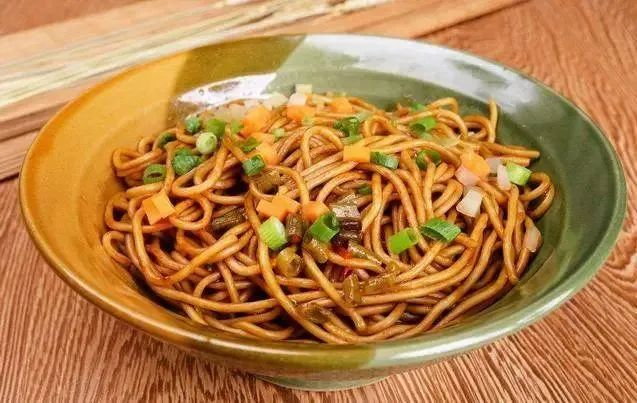
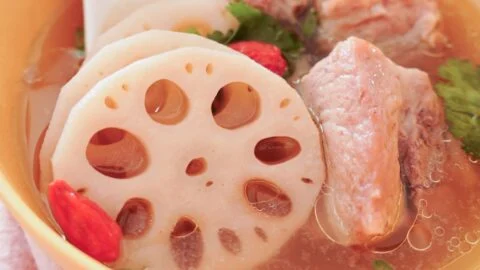
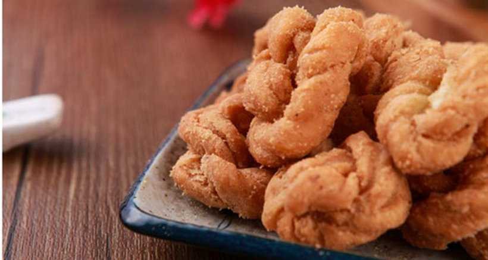

Reganmian, or Hot Dry Noodles, is Wuhan’s most famous dish— a staple breakfast for locals and a must-try for visitors. It’s made with alkaline wheat noodles (chewy and firm) tossed in a sauce of sesame paste, soy sauce, vinegar, chili oil, and minced garlic, then topped with pickled radish, chopped scallions, and sometimes dried shrimp or beef.What makes reganmian unique is the sesame paste—rich, nutty, and thick, it coats every strand of noodle. Unlike soup noodles, reganmian is "dry," so the flavors are concentrated. You’ll find it at every street stall and breakfast shop in Wuhan—locals eat it standing up, slurping quickly to enjoy the noodles while they’re still hot. The best reganmian is made with fresh noodles, pulled and cooked to order.
Noodles: Chewy, firm, and slightly alkaline—they hold the sauce well without getting soggy.
Sesame Paste: Rich, nutty, and creamy— the star of the dish, balancing the saltiness of soy sauce and heat of chili oil.
Toppings: Pickled radish adds a tangy crunch; scallions add freshness; dried shrimp (optional) adds umami.
Overall Balance: Salty, nutty, slightly spicy, and tangy— every bite is packed with flavor.
Street Stalls/Breakfast Shops: 6–10 CNY/bowl (basic version with standard toppings). For extra add-ons like sliced beef or dried shrimp, add 3–5 CNY.

Lotus Root Soup with Ribs is Wuhan’s comfort food staple—especially popular in autumn and winter, when lotus roots are in peak season (plump, sweet, and tender). Wuhan’s proximity to East Lake means the city has access to fresh, high-quality lotus roots, which are the star of the dish.The soup is slow-cooked for 2–3 hours, allowing the flavors to meld: pork ribs (usually spare ribs) release their savory richness into the broth, while lotus roots add a natural sweetness and crisp-tender texture. Sometimes, dried chestnuts or red dates are added to enhance the sweetness—creating a broth that’s hearty, nourishing, and slightly sweet, with no heavy seasonings to overpower the ingredients.It’s not just a home-cooked favorite; you’ll find it on the menu at almost every local restaurant, from casual eateries to upscale spots. Locals often say a bowl of this soup “warms the stomach and the heart”—perfect for chasing away Wuhan’s winter chill.
Broth: Clear, light golden, and savory-sweet—rich with pork flavor but not greasy. The sweetness comes entirely from the lotus roots (and optional chestnuts/red dates), making it feel fresh and nourishing.
Lotus Roots: Crisp-tender (not mushy), with a subtle earthy sweetness that soaks up the broth’s savoriness.
Overall:Comforting and balanced—ideal for a light lunch or a starter before a spicy meal.
Local Eateries/Cafés: 28–40 CNY/small pot (serves 2–3 people); 58–78 CNY/large pot (serves 4–6 people).

Fried Dough Twists, or “Mahua,” are a beloved street snack in Wuhan—crunchy, slightly sweet, and coated in sesame seeds, they’re perfect for a mid-morning or afternoon pick-me-up. Unlike the thicker, chewier mahua found in northern China, Wuhan’s version is thinner, crispier, and lighter, with a subtle sesame aroma.The dough is made with flour, sugar, yeast, and a touch of oil, then twisted into a spiral shape and deep-fried until golden. After frying, it’s tossed in white sesame seeds (sometimes black sesame for a nuttier flavor) to add texture and aroma. You’ll find vendors selling mahua from carts on busy streets—especially near schools, markets, and tourist spots like Hubu Lane.It’s a nostalgic snack for many Wuhan locals, who grew up buying a bag of mahua after school. It’s also portable—wrap a few in a paper bag and take them with you while exploring East Lake or the Yellow Crane Tower.
Texture: Thin, crispy, and slightly brittle—each bite snaps easily, with no chewy or doughy center.
Flavor: Mildly sweet (not cloying) with a strong sesame aroma. The fried dough has a toasty, wheat-like taste that complements the sesame seeds.
Aftertaste: Light and not greasy—you can eat a few pieces without feeling full, making it great for snacking on the go.
Street Vendors: 8–12 CNY/bag (15–20 pieces per bag). Some vendors sell “sweet” or “salty” versions—ask for your preference.